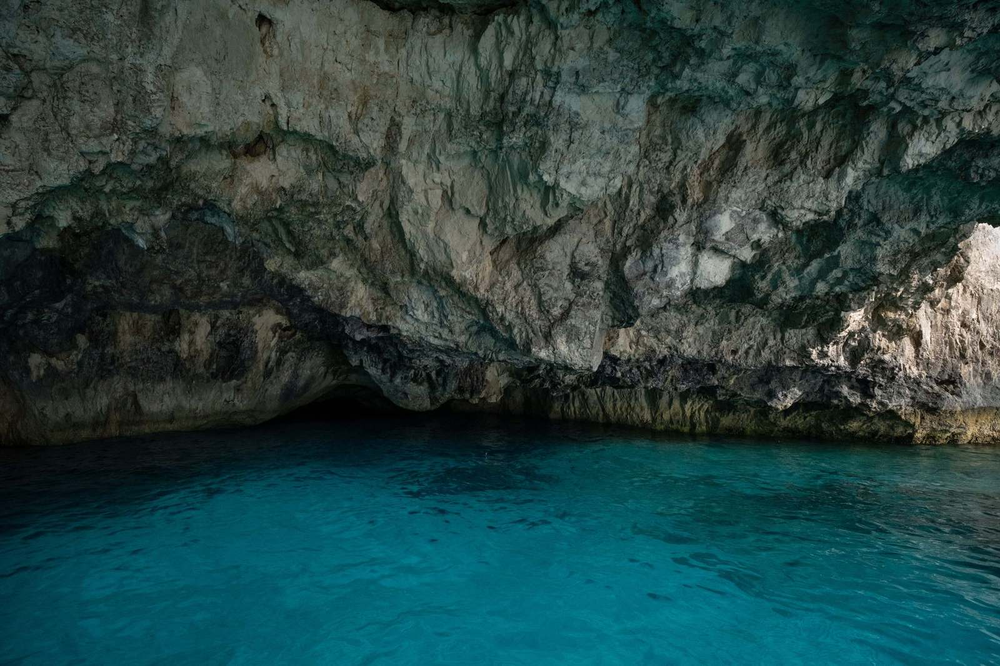
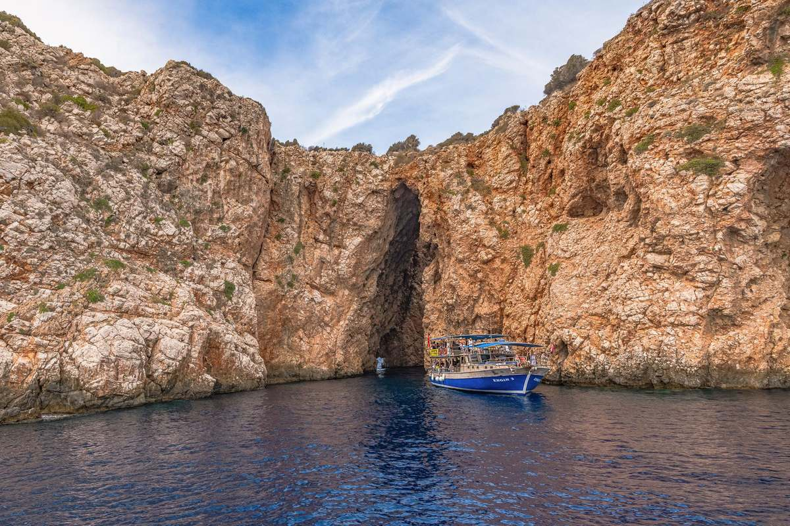
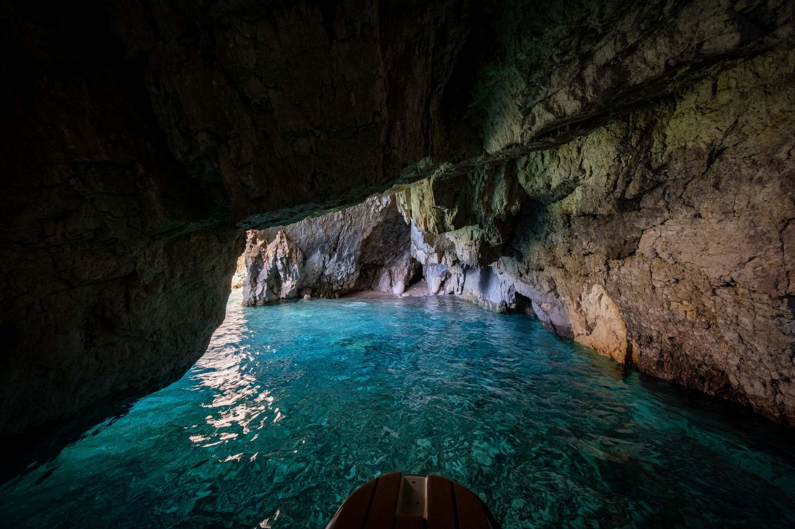

Koupání v jeskyních u Puly
Vyplujte malou lodí podél útesů a zaplavte si v mořské jeskyni, kam se dostanete jen po vodě.
- Den
- 11:00–15:00
- Večer
- 18:00–21:00
- Nápoje
- V ceně
- Soukromě
- Asi 120 € za hodinu (loď)

Plavání uvnitř mořské jeskyně
Plavba vede podél skalnatého jižního pobřeží, kde se útesy noří do průzračné vody. Vrcholem je mořská jeskyně, v níž sluneční světlo prosvítá vodou a odráží se vzhůru, takže voda modře září. Můžete plavat a šnorchlovat, mezi zastávkami se opalovat na lodi a pokud chcete, skákat z lodi nebo z nízkých útesů.
Výlet je jako stvořený pro páry, rodiny i skupiny přátel. Nepotřebujete žádné zkušenosti, stačí základní plavecké dovednosti.
Dva odjezdy
Obě túry se konají na menší lodi vhodné pro malé skupiny. Nápoje jsou v ceně. Pokud budete chtít jíst, vezměte si vlastní jídlo. Aktuální cenu za osobu vám sdělíme na dotaz.
| Túra | Čas | Atmosféra |
|---|---|---|
| Denní | 11:00–15:00 | Jasné světlo, nejlepší viditelnost pod vodou |
| Večerní | 18:00–21:00 | Klidnější nálada, výhledy na západ slunce |

Soukromá túra
Pro skupinu asi 10 osob se soukromá túra vyplatí: loď stojí zhruba 120 € za hodinu (podle sezony a délky může být i méně) a cena se dělí mezi všechny. Vyberte si 3 nebo 4 hodiny, půl dne či celý den.
- Den: 11:00–15:00
- Večer: 18:00–21:00
- Nápoje v ceně
- Soukromá túra: asi 120 € za hodinu za loď
Co je dobré vědět
Vezměte si masku
Šnorchlovací vybavení bývá k dispozici. Zeptejte se při rezervaci.
Používejte opalovací krém šetrný k moři
Nebo se po každém koupání znovu namažte.
Vyberte si světlo
Den pro viditelnost, večer pro atmosféru.
Často kladené otázky
Co potřebuji k plavání v jeskyni?
Máme si vzít něco k jídlu?
Mohu si rezervovat soukromou túru?
Je skákání z útesů v ceně?
Chcete si rezervovat místo?
Pošlete nám termín a počet osob. Ověříme volnou kapacitu a odpovíme do 24 hodin.